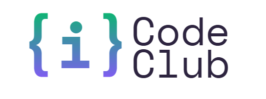
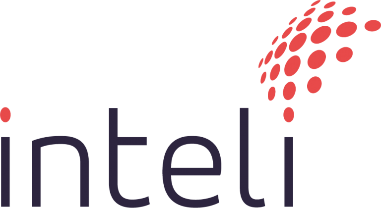
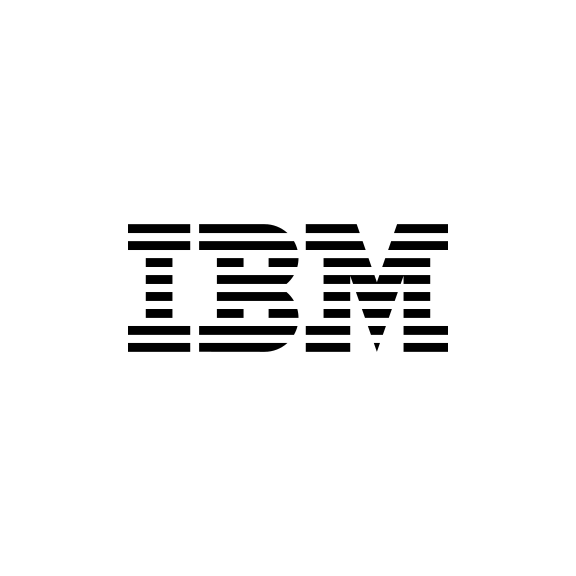

CODE HACK / 01
Ex-participantes
dos projetos do Code Club
Uma semana para aprender, criar em equipe e transformar tecnologia em soluções para a próxima geração.
Contagem ilustrativa
Como podemos usar a tecnologia para formar jovens mais conscientes, críticos e preparados para participar da sociedade?
Durante o Code Hack, todas as equipes partem dessa pergunta para criar uma solução com impacto real. Vale pensar diferente, testar possibilidades e construir junto.
Explore caminhos para começardos projetos do Code Club
da rede pública de São Paulo
entre 15 e 19 anos
O Code Hack reúne quem já faz parte da comunidade e jovens que querem criar seu primeiro projeto com impacto social.
Quero participarDo primeiro encontro ao pitch final, cada etapa ajuda sua equipe a tirar a ideia do papel.
As equipes têm de 3 a 6 participantes e são organizadas antes do início do hackathon.
ANTES DO EVENTOUma semana com treinamentos, construção da solução e mentorias com parceiros.
SEMANA ONLINENa final presencial, as equipes concluem seus projetos, fazem o pitch e conhecem os vencedores.
GRANDE FINALProgramação e compromissos
Datas, horários, prazos de entrega e atividades obrigatórias serão divulgados em breve.
Estas trilhas são pontos de partida. Sua equipe também pode propor outro caminho dentro do desafio.
Entender decisões públicas, dados e o papel de cada pessoa na sociedade.
Facilitar o acesso à informação para fazer escolhas mais conscientes.
Conectar pessoas a ações que melhoram a escola, o bairro e a cidade.
Apoiar decisões sobre dinheiro, consumo e planejamento.
Criar hábitos e soluções para cuidar do ambiente de forma coletiva.
Tem outro jeito de responder ao desafio? Esse espaço também é seu.
Ao longo da jornada, cada equipe desenvolve uma solução e prepara o material para apresentá-la.
Protótipo navegável ou implementação funcional.
O trabalho desenvolvido pela equipe, organizado para avaliação.
Problema, proposta e funcionamento da solução.
Apresentação da ideia para as bancas avaliadoras.
Os formatos finais de submissão serão detalhados no regulamento oficial.
Três olhares se combinam na avaliação final dos projetos.
Viabilidade, aplicação e qualidade da solução.
Impacto social, originalidade e clareza da apresentação.
Avaliação feita por participantes e pelo público.
A equipe vencedora do Code Hack vai ganhar um livro surpresa.



As informações práticas serão atualizadas aqui conforme a organização confirmar cada detalhe.
A grande final será presencial no Inteli, em São Paulo, com duração aproximada de três horas.
Av. Professor Almeida Prado, 520Na semana online, haverá nivelamento em ferramentas e apoio para desenvolver a solução.
O essencial para você começar a se planejar.
Jovens de 15 a 19 anos, incluindo ex-participantes dos projetos do Code Club e estudantes da rede pública de São Paulo.
As equipes serão formadas antes do início do hackathon e terão de 3 a 6 participantes. As orientações de inscrição serão divulgadas em breve.
A semana de capacitação e desenvolvimento acontece online. A grande final, com apresentações, acontece presencialmente no Inteli.
Uma solução demonstrável, repositório no GitHub, documentação do projeto e pitch final. Consulte o regulamento oficial quando ele estiver disponível para ver os formatos e prazos.
A data de abertura e o link do formulário ainda serão divulgados pela organização.